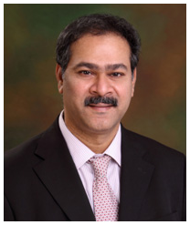

+91-98607-55000
Get an
Appointment
Nova Top Surgeons [X]



Dr. Mahendar Valletti
Consultant Bariatric and Metabolic surgery
Speciality
Bariatric Surgery
Location
Jubilee hills, Hyderabad
Clinical Focus and Expertise
-
Bariatric surgery
-
Gastric Banding
-
Sleeve resection
-
gastric bypass and Ileal transposition and all advanced laparoscopic surgeries
Career
Surgeon with 11 years of experience
Faculty Experience
-
Examiner for the Royal college of surgeons of England, London for the postgraduate exams MRCS.
-
Recent publication on the use of Tristaple Technology in Bariatric surgery.
Education
-
FICS - international College of surgeons, USA in 2002.
-
FRCS - Royal College of surgeons in Ireland in 1995
-
M.S (Gen. Surgery) - Guntur Medical college, Guntur in 1992
-
MBBS - Guntur medical college in 1987
Conferences and Seminars
-
Invited Faculty to chair sessions in ABSCON, Apollo Bariatric conference held in Chennai on 21st and 22ndof Jan,2012.
-
Attended Bariatric surgery update and attachment in Homerton University hospital in London,UK between 1st to 12th Dec 2011.
-
Presented a paper - Bariatric surgery, Indian perspective in APASICON held at Vijayawada, AP, India in Sep 2010.
-
Presented a paper - Gastric Sleeve Resection, is it emerging as the primary bariatric procedure in Asia ? - in the APASICON 09 held in Warangal, Sep 09
-
Attended as an Indian delegate Paris, France in Aug 2009.
-
Delivered a talk on - Obesity surgery, the Asian Perspective - in the CME section of NATS, North American Telugu Society, Orlando,Florida in July 2009
-
Chaired the session in Gynaecological laparoscopic society of India, held in Hyderabad in June 2009.
-
Attended the national conference of AMASI held in Mumbai, april 2009.
-
Attended the SELSI , society of endoscopic and lapascopic surgeons of India, held at Agra in Oct.2008.
-
Attended and chaired a session in the Metasurg 2008, held in Mumbai 2008.
-
Attended and chaired a session in the the national conference of AMASI held in Jaipur in Feb 2008.
-
Attended as an Indian delegate and poster presentation in the SAGES held in Los Vegas, USA in april 2007.
-
Attended the 5th national congress of Obesity surgery, OSSICON 2007 held in Chennai in March 2007.
-
Attended IASG,Indian Association of Surgical Gastroenterology national conference held at Kochi, Sep 2004.
-
Attended LAPARO SURG 2003 held at Coimbatore in 2003.
-
Attended LAPARO SURG 2001 held at Coimbatore in 2001.
-
Early Gastric cancer, my Japanese experience, presented the paper in the National IMA conference held in Hyderabad in 2001.
-
"What is new in Gastro-intestinal Surgery" in Leeds General Infirmary, Leeds between 4th and 5th of June 99.
-
Eurosurgery 98 held in BUDAPEST, HUNGRY held between 17 to 21 June 98.
-
Association of Surgeons in Great Britain and Ireland - Meeting in Edinburgh Conference Centre, 13th to 15th May 1998.
-
Advanced Laparoscopic Skills Course - LIMIT - Leeds General Infirmary Oct - 97.
-
3rd Annual Hepato Biliary Masterclass - Royal Liverpool University HospitalApril - 97.
-
Therapeutic ERCP Skills Course - Leicester Royal Infirmary Jan - 1997.
-
Basic Laparoscopic Skills Course, Leeds General Infirmary, Leeds. October 1996.
-
Anastomosis Workshop at Addenbrookes Hospital, Cambridge June 1996.
-
Ionising Radiation Protection Course at Leeds General Infirmary, Leeds April 1996
-
Vascular Anastomosis Workshop at Prince Philip Hospital, Llanelli, S.Wales.September 1995.
-
Surgical Oncology Workshop at Tata Memorial Centre, Bombay, India.May 1991.
-
Continuing Medical Education at Kasturba Medical College, Manipal, India.September 1989.
Research and Publications
-
"Pain control in acute abdomen" a prospective study done in Monklands Hospital between Jan 98 to Aug 98
-
"Ilel Pouch - Anal Anastomosis with and without covering Ileostomy - A randomised control study"
"A Study of Parotid Swellings" February 1989 - February 1992. Dissertation submitted to the University of Health Sciences, A.P, India.
-
Risk factors leading to ITU admission following Oesophago-gastrectomy, Hairmyres experience presented on 30-10-98 in the annural meeting of West of Scotland Surgical Association in the Royal College of Surgeons in GLASGOW.
Memberships
-
Life member of OSSI, Obesity surgeon's society of India
-
Life member of ASI, Association of Surgeons of India.
-
Life member of IMA, Indian Medical Association.
-
Member of SAGES, Society of American Gastrointestinal Endoscopic Surgeons.
-
Member of ASGBI, Association of Surgeons of Great Britain and Ireland.
-
Founder member of AMASI, Association of Minimal Access Surgeons of India.
-
Founder member of AIAARO, All India Association for Advancing Research in Obesity.